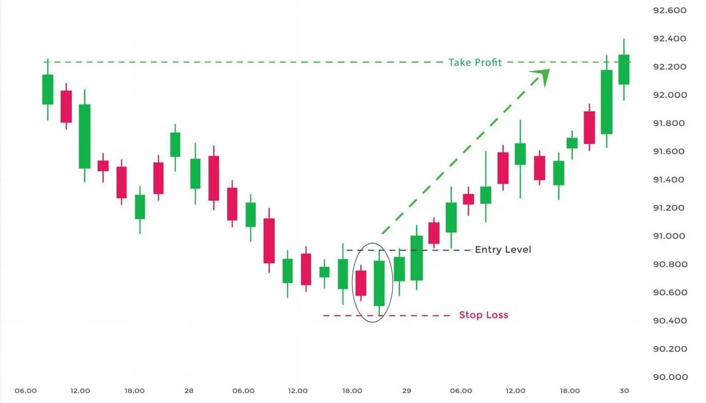

The bullish engulfing candle signals reversal of a downtrend and indicates a rise in buying pressure when it appears at the bottom of a downtrend.
This pattern reverses the ongoing trend as more buyers enter the market and move the prices up further.
The pattern involves two candles, with the second green candle that is completely engulfing the body of the previous red candle.
| What Does the Bullish Engulfing Look Like? |

| Formation of Bullish Engulfing Patterns: |
| Trading Example: 1 |
Below is an example of going to trade Bullish Engulfing pattern as shown in the daily chart of

One should remember the below points when trading with the Bullish Engulfing pattern:
